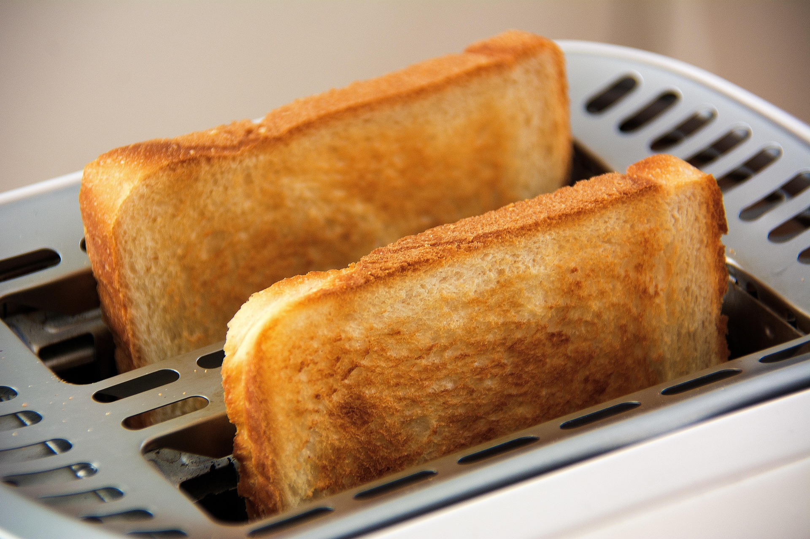

How to Make Toast

A refined classic in the world of bread lovers
Ingredients
- Slice of Bread
-
Condiments (optional):
Instructions (may be complicated for novice chefs)
- Acquire a toaster and plug it in
- Put your slice of bread in any slot
-
Set your desired toastiness setting (will improve with practice)
- Push the start button and go find your condiments
- Once the bread has elevated place it on a plate
- Spread your condiments if desired and viola you have toast
Home